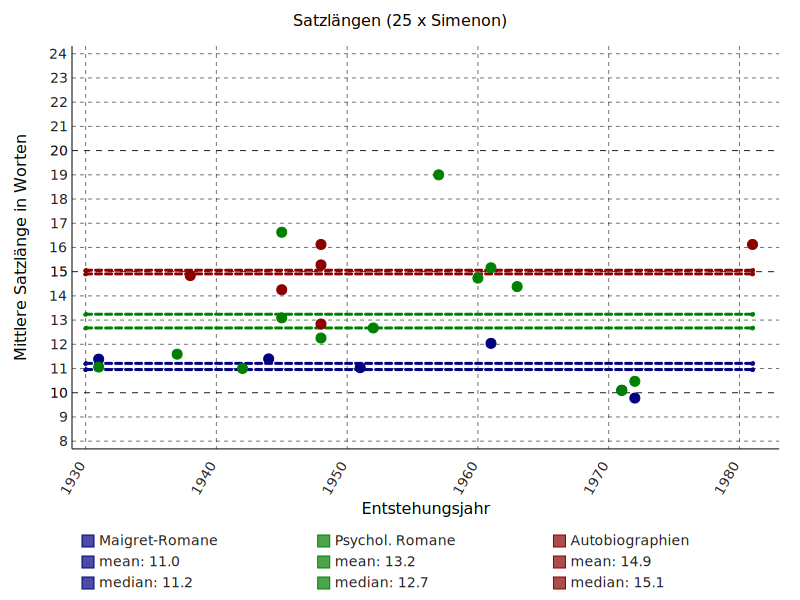

<!doctype html>
<html lang="en">
<head>
<meta charset="utf-8">
<!-- CUSTOMIZE THIS! -->
<title>Wiederholende Forschung</title>
<meta name="author" content="Christof Schöch">
<!-- END -->
<meta name="description" content="Slides">
<meta name="apple-mobile-web-app-capable" content="yes">
<meta name="apple-mobile-web-app-status-bar-style" content="black-translucent">
<meta name="viewport" content="width=device-width, initial-scale=1.0, maximum-scale=1.0, user-scalable=no, minimal-ui">
<link rel="stylesheet" href="css/reveal.css">
<link rel="stylesheet" href="css/theme/simple.css" id="theme">
<!-- Code syntax highlighting -->
<link rel="stylesheet" href="lib/css/zenburn.css">
<!-- Printing and PDF exports -->
<script>
var link = document.createElement( 'link' );
link.rel = 'stylesheet';
link.type = 'text/css';
link.href = window.location.search.match( /print-pdf/gi ) ? 'css/print/pdf.css' : 'css/print/paper.css';
document.getElementsByTagName( 'head' )[0].appendChild( link );
</script>
<!--[if lt IE 9]>
<script src="lib/js/html5shiv.js"></script>
<![endif]-->
</head>

<body>
<div class="reveal">
<div class="slides">
<section data-markdown="" data-separator="^\n---\n" data-separator-vertical="^\n--\n" data-charset="utf-8">
<script type="text/template">

<!--  vvvvv THIS IS WHERE THE CONTENT GOES! vvvvvvv  -->


## Wiederholende Forschung in den digitalen Geisteswissenschaften
<hr/>
<br/>
<br/>
<p>Christof Schöch, Würzburg</p>
<br/>
<hr/>
<small>[DHd-Tagung 2017: "Digitale Nachhaltigkeit"](http://www.dhd2017.ch/)</small>
<br/>
<small>Bern, 13.-18. Februar 2017</small>
<p></img>&nbsp;&nbsp;&nbsp;&nbsp;&nbsp;&nbsp;</img>&nbsp;&nbsp;&nbsp;&nbsp;&nbsp;&nbsp;</img></p>

---
<br/>
## Überblick
* [Wiederholende Forschung](#/2)
* [Erste Fallstudie: Simenon](#/3)
* [Zweite Fallstudie: Racine](#/4)
* [Fazit](#/5)


---
<br/>
# Wiederholende <br/>Forschung


--
## Wiederholende Forschung
<br/>
* Wiederholbare / wiederholende Forschung <!-- .element: class="fragment" data-fragment-index="1" -->
* Digital Humanities als wiederholende Forschung <!-- .element: class="fragment" data-fragment-index="2" -->
* Kontinuität des gw. Diskurses <!-- .element: class="fragment" data-fragment-index="3" -->
* Verhältnis von D und H unter dem Mikroskop <!-- .element: class="fragment" data-fragment-index="4" -->
* Inhaltlicher / methodischer / disziplinärer Erkenntnisgewinn  <!-- .element: class="fragment" data-fragment-index="5" -->


--
## Wiederholungsstudien
<br/>
* Untersuchung, die in einem unmittelbaren Bezug zu einer früheren Forschungsarbeit steht <!-- .element: class="fragment" data-fragment-index="1" -->
* Vielfältiges Verhältnis: ursprüngliche / wiederholende Untersuchung <!-- .element: class="fragment" data-fragment-index="2" -->
* Faktoren: Fragestellung, Daten, Methoden <!-- .element: class="fragment" data-fragment-index="3" -->

--
## Konzeptuelles Feld<br/>der wiederholenden Forschung
<a href="img/wiederholende-forschung.png"></img></a>

---
<br/>
# Erste Fallstudie: <br/>Simenon

--
## Kontext: Richeaudeau über Simenon
<br/>
* Georges Simenon: belgischer Autor
* François Richeaudeau: französischer Literaturwissenschaftler
* Artikel von 1982 zur Satzlänge bei Simenon

--
## Richeaudeaus Thesen
<br/>
* Simenon verwendet vergleichsweise kurze Sätze
* Kein Unterschied zwischen Maigret-Krimis und psychologischen Romanen
<br/>
<a href="img/richeaudeau_table-des-25.png"></img></a>

--
## Richeaudeaus Ergebnisse
<br/>
Durchschnittliche Satzlänge in Wörtern
<br/>
<br/>

| Texte     |                             |    Satzlänge         |
|-----------| --------------------------- |:--------------------:|
| Simenon   | Maigret-Krimis<br/>psychol. Romane<br/>autobiogr. Texte | 12,5<br/>13,2<br/>18,4   | 
| Vergleich | Marcel Proust|        43,3 |   


--
## Wiederholungsstudie: Textsammlung
<br/>

|    | Texte                       |    Anzahl der Texte  |
|----| --------------------------- |:--------------------:|
| a) | Richeaudeaus Simenon-Texte  |             25       | 
| b) | weitere Texte von Simenon<br/>weitere zeitg. Romane   |            102<br/>252       | 

--
## Wiederholungsstudie: Vorgehen
<br/>
* Satz-Segmentierung mit NLTK
* Tokenisierung mit RegEx ("\W"; Ausnahmen)
* Mittelwert, Median, Verteilung pro Roman
* Visualisierung und Signifikanztests


--
## Richeaudeaus 25 Texte 
<a href="img/sentlen-simenon_25.svg"></img></a>
<br/>
<small>Maigret vs. psychol. Romane: Welch 0.01; Mann-Whitney 0.59<br/>Maigret vs. Autobio: Welch 0.0001, Mann-Whitney 0.005</small> <!-- .element: class="fragment" data-fragment-index="1" -->


--
## Erweiterte Simenon-Sammlung 
<a href="img/sentlen-simenon_127.svg"></img></a>
<br/>
<small>Alle Verteilungen sind signifikant unterschiedlich.</small> <!-- .element: class="fragment" data-fragment-index="1" -->

--
## Simenon vs. Zeitgenossen (1920-1980)
<a href="img/sentlen-romans_101+252.svg"></img></a>
<br/>
<small>Welch's t-Test: p-Wert 0.00004; Mann-Whitney: p-Wert 0.52.</small> <!-- .element: class="fragment" data-fragment-index="1" -->

--
## Zwischenbilanz
<br/>
* a) 25 Richeaudeau-Texte <!-- .element: class="fragment" data-fragment-index="1" -->
    * gleiche Frage und Daten, fast gleiche Methode <!-- .element: class="fragment" data-fragment-index="1" -->(=[Replikation](#/2/4))
    * letztlich zu wenig Daten
* b) 127/353 Texte  <!-- .element: class="fragment" data-fragment-index="2" -->
    * gleiche Frage, fast gleiche Methode, andere Daten <!-- .element: class="fragment" data-fragment-index="2" -->(=[Reproduktion](#/2/4))
    * Ergebnisse sprechen eher gegen Richeaudeaus Thesen

---
<br/>
# Zweite Fallstudie: <br/>Racine

--
## Kontext: Spitzer über Racine
<br/>
* Jean Racine (1639-1699), französischer Dramatiker
* Leo Spitzer (1887-1960), österreichischer Romanist
* Artikel: "Die klassische Dämpfung in Racines Stil", 1928

--
## Klassische Dämpfung
<br/>
* literarisches Stilprinzip
* musikalische Metapher
* Wirkmächtig: hat Bild von Racine und Klassik geprägt
* Epochenstil vs. Autorenstil

--
## Spitzers Vorgehensweise
<br/>
* "Dämpfung": einheitsstiftendes Prinzip
* aufgefächert in etwa 10 abstrakte Phänomene
* realisiert in rund 50 verschiedenen stilistische Mustern
* illustriert mit 484 Beispielen aus 11 Tragödien Racines

--
## Wiederholungsstudie
<br/>
* von Spitzer beschriebene und illustrierte Muster operationalisieren
* in Racines Werk und bei den Zeitgenossen identifizieren
* quantitative Hinweise auf die Frage nach Autorstil / Epochenstil

--
## Textsammlung
<br/>
* Tragödien: 
    * 11 x Racine 
    * 38 x Zeitgenossen
* Quelle: http://www.theatre-classique.fr 
* XML-Format mit morphologischer und semantischer Annotation
* Workflow: TEI + Freeling + NLTK + WordNet + Python + TXM/CQP

--
## Beispiel: das entgrenzende 'où'
<br/>
<a href="img/spitzer_entgrenzendes-où-168.png"></img></a>

--
## "où": Beispiele bei Spitzer
<br/>
* _"...cette mort où je cours,"_
* _"...la honte où je suis descendue."_
* _"...les déplaisirs où son âme se noie."_
<br/>
<br/>
* _"... diesen Tod, (wo / dem) ich entgegenstrebe,"_
* _"...die Schmach, (wo / zu der) ich abgesunken bin."_
* "_...die Ungemach, (wo / in der) seine Seele ertrinkt."_ 

--
## TXM-Query (Racine)
<a href="img/txm-query.png"></img></a>
<small>Query: [wnlex="noun.feeling"|lemma="coeur|honte|...][form=","]?[lemma="où"]</small>
<br/>
<small>Genauigkeit: alle Spitzer-Beispiele? Treffer passen zur Definition?</small>

--
## Racine vs. Zeitgenossen
<a href="img/signifikanz.svg"></img></a>
<small>Verhältnis der Mittelwerte (Racine vs. Zeitgenossen): 30 von 50 Phänomene;<br/>Bei Racine über-/unterrepräsentiert; grün=signifikant (Mann-Whitney)</small>

--
## Zwischenbilanz
<br/>
* Wiederholende Forschung <!-- .element: class="fragment" data-fragment-index="1" --> 
    * a) Racine-Texte: gleiche Frage, gleiche Daten, andere Methode <!-- .element: class="fragment" data-fragment-index="1" --> (=[Reanalyse](#/2/4)) <!-- .element: class="fragment" data-fragment-index="1" -->
    * b) Racine+Zeitgenossen: gleiche Frage, erweiterte Daten, andere Methode  <!-- .element: class="fragment" data-fragment-index="1" -->(=[Nachfolgeforschung](#/2/4)) <!-- .element: class="fragment" data-fragment-index="1" -->
* Ergebnisse <!-- .element: class="fragment" data-fragment-index="2" --> 
    * "Dämpfung" ist ein Epochenstil, kein Autorenstil! <!-- .element: class="fragment" data-fragment-index="2" -->
    * Zentrale Herausforderung: Modellierung der stilistischen Muster <!-- .element: class="fragment" data-fragment-index="2" -->

---
<br/>
# Fazit

--
## Fazit
<br/>
* (Analoge) Originalstudien nicht auf Wiederholbarkeit angelegt <!-- .element: class="fragment" data-fragment-index="1" --> 
* Bezug Original- / Wiederholungsstudie (Daten, Methode, Fragestellung): nicht binär <!-- .element: class="fragment" data-fragment-index="2" --> 
* Eigenheiten von Original- und Wiederholungsstudie werden deutlich <!-- .element: class="fragment" data-fragment-index="3" --> 
* Kontinuitätsfrage: Distanz / Nähe wird jeweils sichtbar <!-- .element: class="fragment" data-fragment-index="4" --> 

--
## Daten, Code, Plots
<br/>
* Simenon-Projekt: <https://github.com/cligs/projects/tree/master/2016/simenon>
* Racine-Projekt: <https://github.com/cligs/projects/tree/master/2016/racine>

--
## Referenzen
<small>
* Baker, Monya (2016): „Is there a reproducibility crisis?“, in: Nature 533: 452–454.
* Bohannon, John (2015): „Many psychology papers fail replication test“, in: Science Magazine 349.6251: 910–911.
* Camerer, Colin F. et al. (2016): „Evaluating replicability of laboratory experiments in economics“, in: Science Magazine 351.6280: 1433–1436.
* Drummond, Chris (2009): „Replicability is not Reproducibility: Nor is it Good Science“, in: Proceedings of the Evaluation Methods for Machine Learning Workshop at the 26th ICML.
* Gomez, Omar S. / Juristo, Natalia / Vegas, Sira (2010): „Replication, Reproduction and Re-analysis: Three ways for verifying experimental findings“, in: RESER ’2010.
* Padilla, Thomas / Higgins, Devin (2016): „Data Praxis in the Digital Humanities: Use, Production, Access“, in: DH2016: Conference Abstracts 644–646, <http://dh2016.adho.org/abstracts/150>.
* Peng, Roger D. (2011): „Reproducible Research in Computational Science“, in: Science Magazine 334: 1226–1227.
* Richeaudeau, François (1982): „Simenon: une écriture pas si simple qu'on le penserait“, in:
Communication et langages 53: 11–32 10.3406/colan.1982.1484.
* Schöch, Christof (2016): „Does Short Sell Better? Belgian Author George Simenon’s use of sentence length“, in: The Dragonfly’s Gaze, <https://dragonfly.hypotheses.org/922> und <http://
dragonfly.hypotheses.org/1005>.
* Spitzer, Leo ([1928]): „Die klassische Dämpfung in Racines Stil“, in: Romanische Stil- und Literaturstudien I. Marburg: Elwert (1931), 135–268.

</small>

--
## Bonus: Simenon vs. 1900-2015 
<a href="img/sentlen-romans_101+500.svg"></img></a>
<br/>
<small>Verteilungen sind signifikant unterschiedlich.</small>

--
## Bonus: "querydoc" (XML)
<small>

* **metadata**
    * study
    * data
    * method 
* **main**
    * div @xml:id
        * label
        * queryGroup @xml:id
            * label
            * comments 
            * ref @key
            * query @xml:id
                * label
                * queryString @type
                * comments
                * ref @key
* **references**
    * record
        * key
        * bibl 

</small>


---
<br/>
<br/>
##Vielen Dank!
<br/>
<br/>
<br/>
<br/>
<br/>
<hr/>
<br/>
<small>[Christof Schöch](http://www.christof-schoech.de)<br/>[CC-BY 4.0](https://creativecommons.org/licenses/by/4.0/), 2017</small>


<!--^^^^^^^ DON'T TOUCH UNLESS YOU KNOW WHAT YOU'RE DOING :-) ^^^^^^^-->

</script>
</section>
</div>
</div>


<script src="lib/js/head.min.js"></script>
<script src="js/reveal.js"></script>
<script>
// Full list of configuration options available at:
// https://github.com/hakimel/reveal.js#configuration
Reveal.initialize({
    controls: true,
    progress: true,
    history: true,
    center: true,
    transition: 'slide', // none/fade/slide/convex/concave/zoom
    // Optional reveal.js plugins
    dependencies: [
        { src: 'lib/js/classList.js', condition: function() { return !document.body.classList; } },
        { src: 'plugin/markdown/marked.js', condition: function() { return !!document.querySelector( '[data-markdown]' ); } },
        { src: 'plugin/markdown/markdown.js', condition: function() { return !!document.querySelector( '[data-markdown]' ); } },
        { src: 'plugin/highlight/highlight.js', async: true, callback: function() { hljs.initHighlightingOnLoad(); } },
        { src: 'plugin/zoom-js/zoom.js', async: true },
        { src: 'plugin/notes/notes.js', async: true }
        ]
    });
</script>
</body>
</html>
